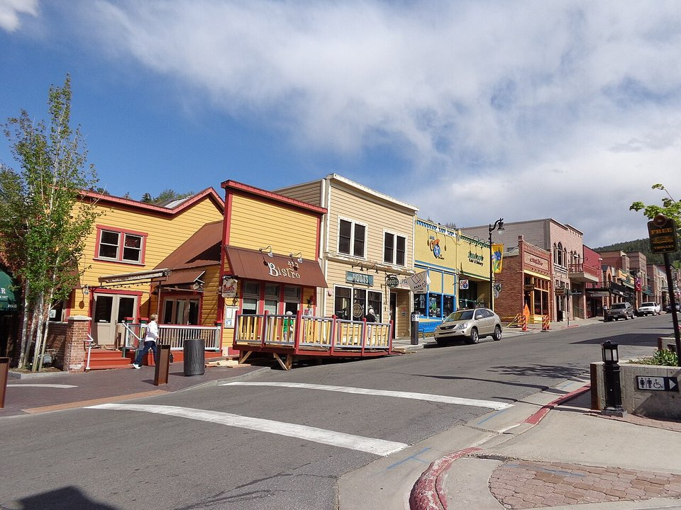

Old Town · Boutique hotel
Washington School House Hotel
A restored 1889 schoolhouse a block from Main Street.
Official details for Washington School House HotelSilver-boom Main Street and Olympic slopes.
Park City grew rich on silver in the 1800s and found a second life as one of America’s great ski towns, host of 2002 Olympic events. Land at Heber Valley Airport, a quiet field 20 minutes away, stay at the Washington School House or Stein Eriksen Lodge, ski or hike Deer Valley and Park City Mountain, watch freestyle aerialists train at the Utah Olympic Park, and finish at High West’s distillery saloon on Main Street.

Time illustration: direct distance at 150 KTAS plus 15 minutes for departure and arrival, matching the discovery page. Use ForeFlight for your actual flight plan.
KHCR, Heber Valley Airport, is a non-towered city airport at 5,637 feet with a 6,898-foot runway, about 20 minutes from Park City.
Heber Valley Airport, Heber City, UT
Mountain terrain all around; density altitude is high in summer. Landing and facility fees apply. Confirm FBO services before you go. No live fuel price is shown.
Mountain flying: high density altitude on summer afternoons, mountain wave and strong winds over the ridges, afternoon thunderstorms from July to September, and winter snow and icing. Consider a mountain-flying course before you go. About 1600 nm from Myrtle Beach: two long days each way with several fuel stops. Plan a week, or overnight on the way out and back.
Rates and availability need travel dates. Holiday weeks book far ahead.
A restored 1889 schoolhouse a block from Main Street.
Official details for Washington School House HotelA Norwegian-style ski-in lodge with a spa.
Official details for Stein Eriksen LodgeReserve weekend dinners.
A Park City institution in a historic building.
Official details for Riverhorse on MainWestern food and whiskey in an old livery stable.
Official details for High West SaloonRestaurants in Park City.
Visit Park City for More restaurantsSummer is quieter and cooler than you might expect.
This prototype links to the local visitor site. It does not yet match events to your travel dates.
Deer Valley and Park City Mountain.
Visit Park City for Ski seasonHiking, biking and concerts.
Visit Park City for Summer in the mountainsAspens on the hillsides.
Visit Park City for Fall colorCheck the local calendar when choosing a weekend, and confirm dates and tickets with the organizer.
A sample Park City weekend. This is a two-day flight each way; plan a week. No bookings or availability confirmed.
Land at KHCR mid-morning.
Lunch on Main Street.
The Utah Olympic Park, then back to the airport.
Land at KHCR, subject to weather, density altitude and your actual flight plan.
Check in and walk Main Street.
Dinner at High West.
Ski or hike Deer Valley.
The Utah Olympic Park.
Dinner at Riverhorse.
The Heber Valley Railroad.
Compute takeoff performance for the morning temperature and allow time at the FBO.
Mountain afternoons bring wind, turbulence and storms; leave early.
Ski or hike Deer Valley.
The Heber Valley Railroad.
Dinner at Riverhorse on Main.
These details make the difference between an appealing list and a usable getaway.
Lodging first, then a car.
About 1,600 nm: two long days each way.
Park City is about 7,000 feet.
December to March, and June to September.
Research-based selections, not personal-visit endorsements. Researched November 1, 2026. Confirm hours, prices and availability directly with each place before booking. Spotted something out of date, or have a favorite we missed? Email us at hello@wingawayweekends.com.
WingAway Weekends helps you discover the destination. Use ForeFlight and current official aviation information for route, performance, weather, NOTAMs and preflight decisions. Flight planning and PIC responsibility stay with the pilot.